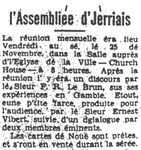

 Lé 25 d'Novembre 1955 des membres d'l'Assembliée d'Jèrriais eûtent lé grand pliaîsi d'êcouter un discours par le Sieur F.R. Le Brun, jnr., sus ses expériences en Gambie. Il est ervenu en Jèrri dèrnièrement pour erprendre eune vie pus civilisée qué là-bas. Dans ses travaux d'administration i' s'trouvit hardi seul parmi les habitants du pays - pus nièrs qué biancs. I' s'mint à apprendre lus langage, et i' nos paslit d'lus vie primitive, d'lus travaux, d'lus supèrstitions, d'lus mode dé transport par rivières, dé bêtes saûvages, d'horriblyes tchieuvres, crocodiles, et autres.
Pus tard, i' nos montrit tchiq' tchuriosités du pays, magnifiquement décorés par les habitants qui font ch'la pour passer lus temps. Des cornes, des sâbres, des boutelles, des bouaîtes, des tortues en bouaix, et autres - toute eune collection!
Lé Sieur Le Brun rêponnit à plusieurs tchestchions posées par l'audience, et i' nos fournit d'information hardi intérêssante.
Evening Post 9/12/1955
(Auve un mio d'rédaction)
Viyiz étout: